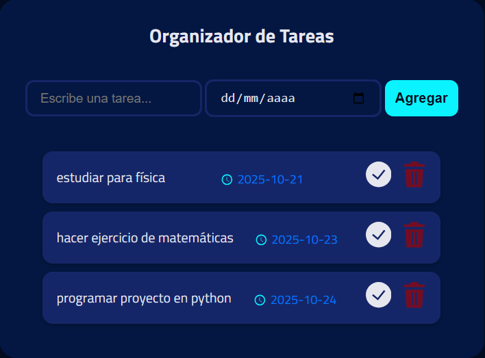
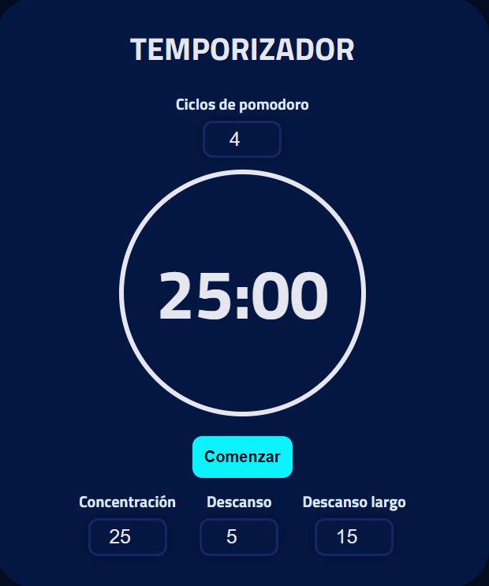
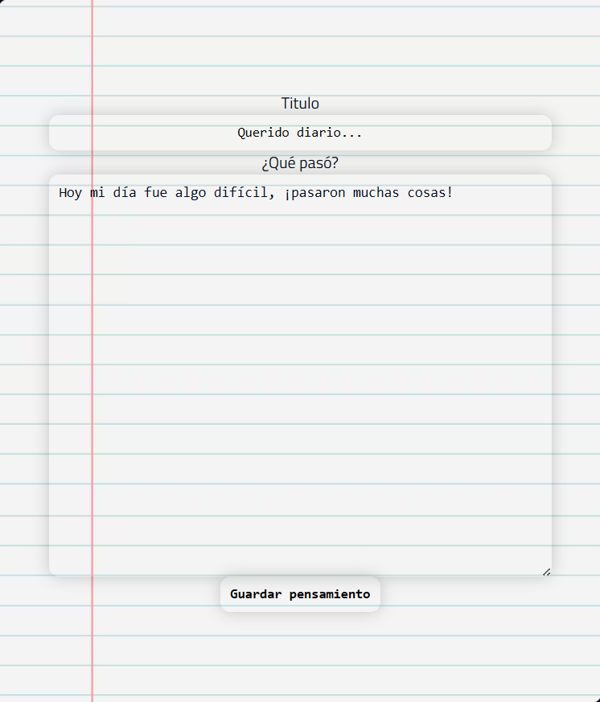

Puedes llevar el control de las tareas que tienes pendientes, ya sean tareas, proyectos o actividades personales: todo en un solo lugar.

Termina tus tareas más rápido con el temporizador. Puedes usar la técnica "Pomodoro": realizar 25 minutos de concentración y 5 de descanso. Pero lo mejor: también lo puedes personalizar.

Escribe en el diario lo que sientes, tus pensamientos, o simplemente tu día, para poder organizar tu mente. Tus notas quedan guardadas para que solo tú tengas acceso a ellas.

{{opinion.texto}}